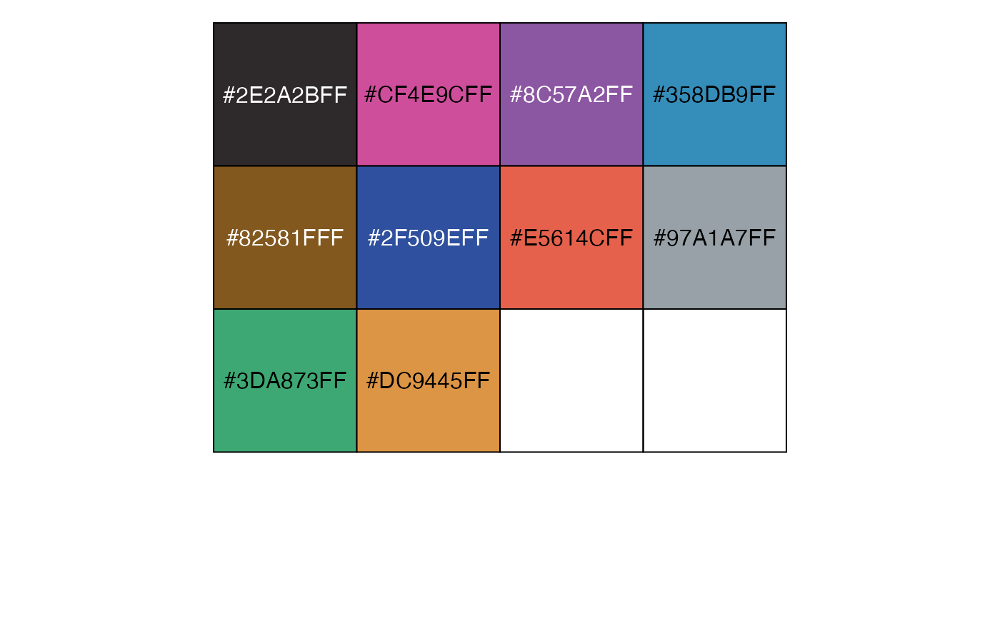
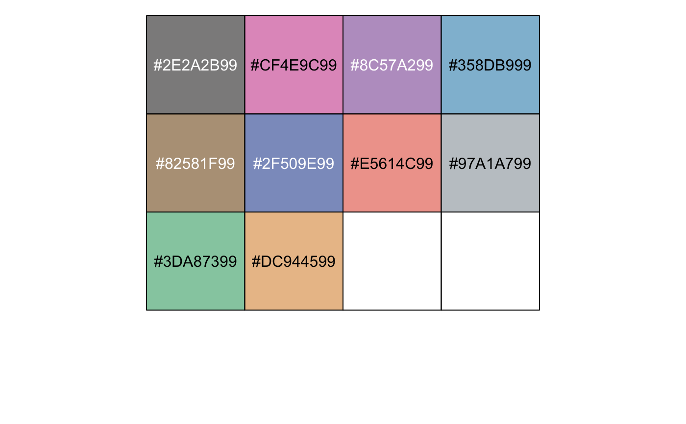
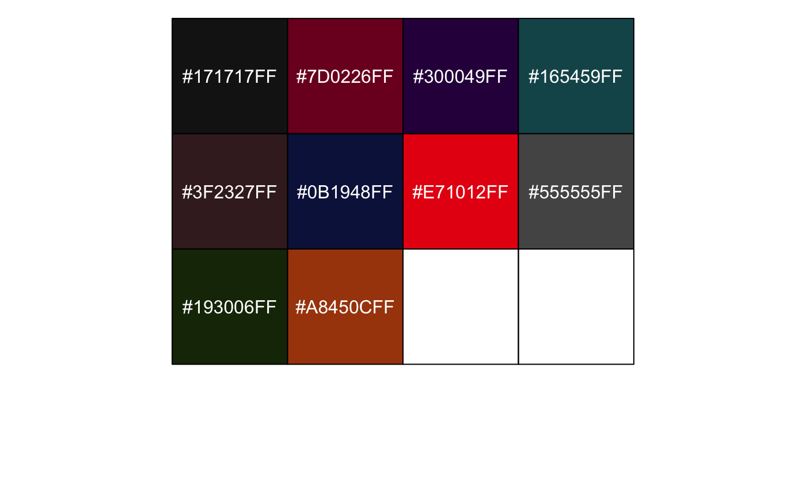
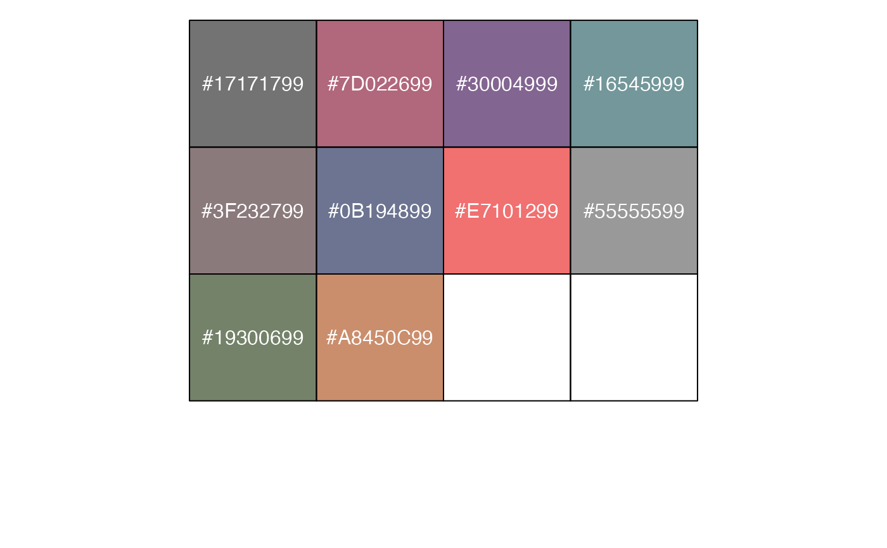
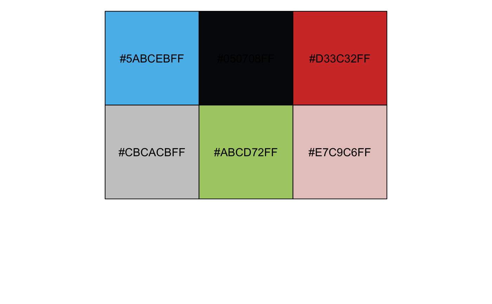
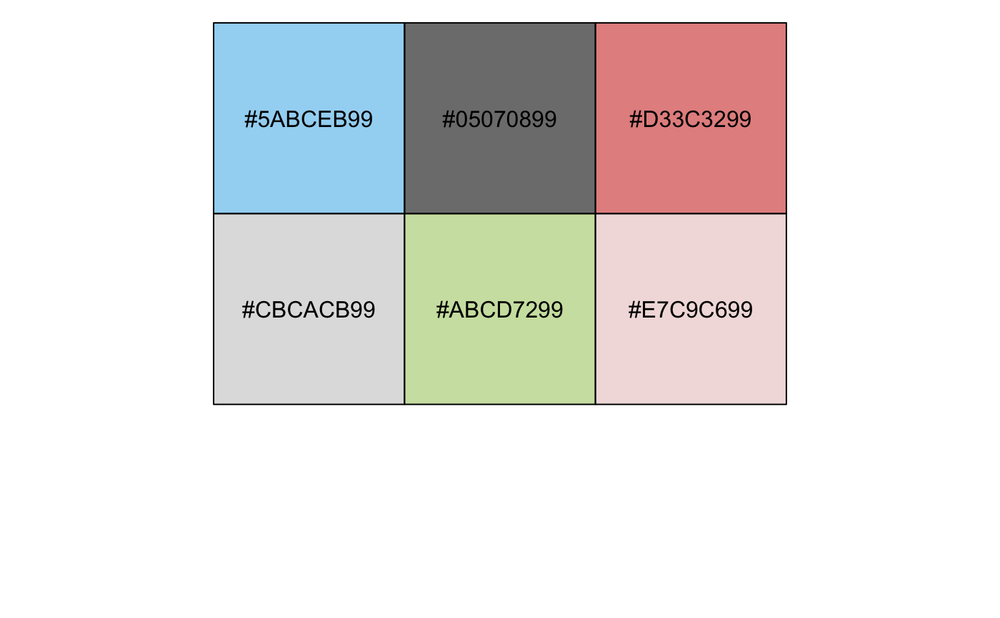

Color palettes inspired by the colors used in projects from the Catalogue Of Somatic Mutations in Cancers (COSMIC)
pal_cosmic(palette = c("hallmarks_light", "hallmarks_dark", "signature_substitutions"), alpha = 1)
| palette | Palette type. Currently there are three available options:
|
|---|---|
| alpha | Transparency level, a real number in (0, 1].
See |
